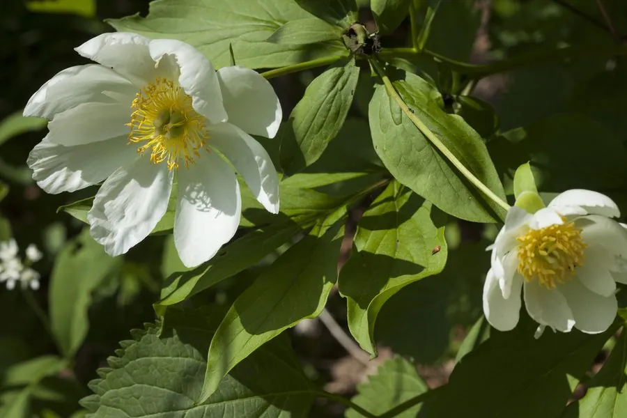

花卉与草本 · 植物界
芍药 Paeonia lactiflora

原产中国北方的芍药科多年生草本，花朵硕大华丽，与牡丹并称“花中二绝”，是传统名花，根部可入药。
- 分类
- 门被子植物门纲木兰纲目虎耳草目科芍药科属芍药属
- 栖息环境
- 山坡草地、林缘及庭院，喜阳光充足、排水良好的环境
- 地理分布
- 原产中国北方及朝鲜半岛、西伯利亚，山东菏泽、江苏扬州等地广泛栽培
- 保护级别
- 暂无评估
物种志
芍药为芍药科芍药属多年生草本，株高 60–80 厘米，具粗壮的肉质根，茎丛生。叶为二回三出复叶，小叶椭圆形至披针形，表面有光泽。花单生茎顶或生于叶腋，直径 8–15 厘米，有单瓣、重瓣之分，花色有白、粉、红、紫等，花期 5–6 月，果期 6–8 月，蓇葖果成熟后开裂散出黑色种子。
芍药原产中国北方、朝鲜半岛及西伯利亚一带，喜阳光充足、夏季凉爽的环境，耐寒力强，可耐 -20℃ 低温，适宜在深厚肥沃、排水良好的沙壤土中生长。它与牡丹花形相似，但牡丹为木本、芍药为草本，故有“牡丹为花王、芍药为花相”之说。芍药根经炮制后即为中药白芍，有养血调经之效；山东菏泽、江苏扬州等地以芍药栽培与观赏闻名，春末夏初是重要的园林与切花材料。
形态与习性
- 株高60–80 厘米，茎丛生
- 花期5–6 月，单朵开放 5–7 天
- 果期6–8 月，蓇葖果开裂散种
- 光照喜光，生长期需充足阳光
- 水分喜湿润，忌积水烂根
- 土壤深厚肥沃、排水良好的沙壤土
- 药用价值根加工后为白芍，养血调经
趣味知识
- 芍药与牡丹同属芍药科，但芍药是草本，牡丹是木本，冬季芍药地上部分会枯萎。
- 芍药的花蕾常分泌黏液，可阻挡蚂蚁等昆虫啃食花蕾。
- “芍药”之名早见于《诗经》，古代男女相赠芍药以表惜别之情。
- 山东菏泽与江苏扬州都以芍药栽培闻名，每年 5 月前后举办花会。